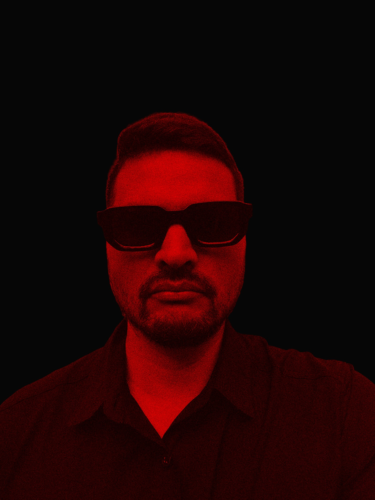
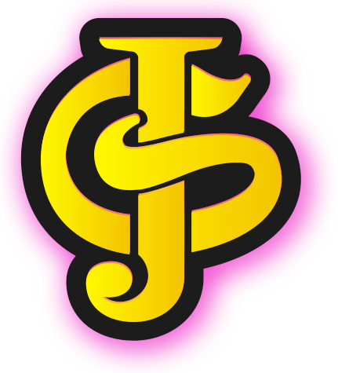

Frontend Developer & UX/UI Designer, based in Costa Rica — open to remote work worldwide. I build interfaces that not only look great — they feel alive.

Empecé mi carrera en el diseño gráfico y la gestión cultural, liderando proyectos y circuitos de arte público galardonados a nivel nacional. Trabajar a gran escala me enseñó a coordinar procesos complejos, cuidar cada detalle visual y, sobre todo, diseñar pensando siempre en la experiencia de las personas.
Hoy aplico esa misma visión estratégica al entorno digital como Diseñador UX/UI y Desarrollador Web. Integro el pensamiento visual, herramientas de prototipado y desarrollo frontend para construir sitios web e interfaces intuitivas, escalables y orientadas a resultados.
Creo en el diseño con propósito y en las soluciones digitales que transmiten historias auténticas.
📍 Ubicado en Costa Rica y abierto a colaboraciones remotas.
¿Tienes un proyecto en mente? Estoy disponible para trabajo remoto (freelance o full-time) en diseño gráfico, UX/UI y desarrollo web, en horario de Costa Rica (GMT-6).
Enviar mensaje ↗
📍 San José, Costa Rica — trabajo remoto, horario GMT-6